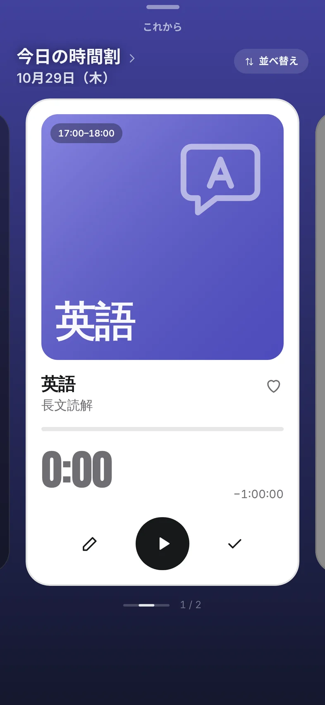

時間割とタイマー
お知らせが来たら、
押すだけ。
時間割に入れた予定は、1日の1本の線にならぶ。終わったところは実線、これからは点線、いまの時刻に赤い点。このページの左の線も、同じ見方。
予定の時刻になると、お知らせが届く。下のバーの「勉強を開始」を1回押せば、もう始まっている。予定がないときは「自習」で始めて、あとで科目に仕分ける。

見本です。1秒で3分すすみます。どこにも保存しません。
時間割に入れた予定は、1日の1本の線にならぶ。終わったところは実線、これからは点線、いまの時刻に赤い点。このページの左の線も、同じ見方。
予定の時刻になると、お知らせが届く。下のバーの「勉強を開始」を1回押せば、もう始まっている。予定がないときは「自習」で始めて、あとで科目に仕分ける。

見本です。1秒で3分すすみます。どこにも保存しません。
終わったら、チェックのボタン。投稿を書くように、ひとことメモを残せる（140字まで）。時間は5分ずつ直せる。タイムラインにも出すかは、そのつど選ぶ。
0時をまたいだ勉強は、日ごとに分けて記録する。
数学が終わって、今日は2時間45分。1回の勉強が、科目の色のブロックになってつみ上がる。
今日の勉強見本 1マス＝5分 色は科目
2時間45分
▲1:17 昨日より
目標まで 0:15
この7日間1本が1日
塔は、ホームの「今日の勉強」のテープ（赤い枠）を立てたもの。
いま勉強中の友だちが、科目と時間といっしょに並ぶ。だれかが始めたら、「一緒に始める」をひと押し。同じ志望校の人でしぼったり、グループで集まったりもできる。
勉強中を見せる相手は、設定で決められる。
17:00 の「勉強を開始」を押すと、あなたの窓にも灯りがつく。
日にちと時間と科目を入れておく。
お知らせが来たら、下のバーから1回。
ひとことは書かなくてもいい。時間はそのまま今日の記録に。
はじめは、勉強中の表示（ニックネーム・科目・時間）は全員に、メッセージはグループのメンバーまでに届きます。どちらも設定で、いつでも変えられます。
出さなくても、自分の順位は見られます。
はじめに、保護者の同意を得ているかをたずねます。「保護者の同意を得ています」にチェックしないと、先へ進めません。
記録は、この iPhone の中に保存されます。圏外でも記録できます。勉強中の表示（ニックネーム・科目・時間）と順位は、設定で決めた範囲の人に見えます。設定から、書き出しや、アカウントとデータの削除ができます。